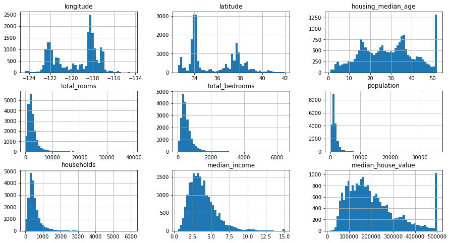
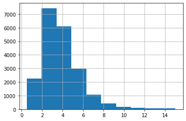
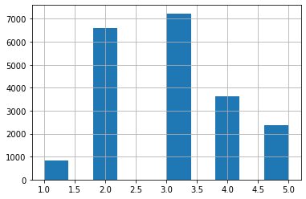
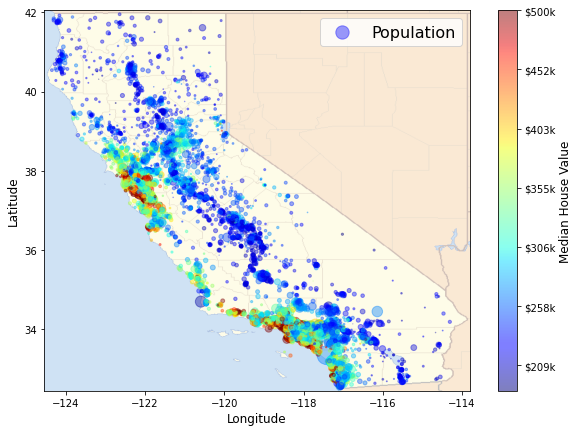
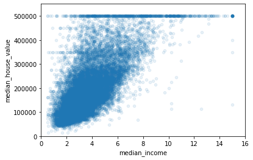
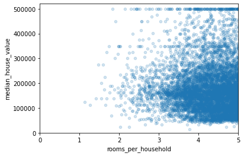

数据处理
Contents
数据处理¶
import matplotlib.pyplot as plt
import numpy as np
import pandas as pd
加载数据¶
housing = pd.read_csv('../../datasets/handson/housing.csv')
housing.head()
| longitude | latitude | housing_median_age | total_rooms | total_bedrooms | population | households | median_income | median_house_value | ocean_proximity | |
|---|---|---|---|---|---|---|---|---|---|---|
| 0 | -122.23 | 37.88 | 41.0 | 880.0 | 129.0 | 322.0 | 126.0 | 8.3252 | 452600.0 | NEAR BAY |
| 1 | -122.22 | 37.86 | 21.0 | 7099.0 | 1106.0 | 2401.0 | 1138.0 | 8.3014 | 358500.0 | NEAR BAY |
| 2 | -122.24 | 37.85 | 52.0 | 1467.0 | 190.0 | 496.0 | 177.0 | 7.2574 | 352100.0 | NEAR BAY |
| 3 | -122.25 | 37.85 | 52.0 | 1274.0 | 235.0 | 558.0 | 219.0 | 5.6431 | 341300.0 | NEAR BAY |
| 4 | -122.25 | 37.85 | 52.0 | 1627.0 | 280.0 | 565.0 | 259.0 | 3.8462 | 342200.0 | NEAR BAY |
housing.info()
<class 'pandas.core.frame.DataFrame'>
RangeIndex: 20640 entries, 0 to 20639
Data columns (total 10 columns):
# Column Non-Null Count Dtype
--- ------ -------------- -----
0 longitude 20640 non-null float64
1 latitude 20640 non-null float64
2 housing_median_age 20640 non-null float64
3 total_rooms 20640 non-null float64
4 total_bedrooms 20433 non-null float64
5 population 20640 non-null float64
6 households 20640 non-null float64
7 median_income 20640 non-null float64
8 median_house_value 20640 non-null float64
9 ocean_proximity 20640 non-null object
dtypes: float64(9), object(1)
memory usage: 1.6+ MB
housing.describe()
| longitude | latitude | housing_median_age | total_rooms | total_bedrooms | population | households | median_income | median_house_value | |
|---|---|---|---|---|---|---|---|---|---|
| count | 20640.000000 | 20640.000000 | 20640.000000 | 20640.000000 | 20433.000000 | 20640.000000 | 20640.000000 | 20640.000000 | 20640.000000 |
| mean | -119.569704 | 35.631861 | 28.639486 | 2635.763081 | 537.870553 | 1425.476744 | 499.539680 | 3.870671 | 206855.816909 |
| std | 2.003532 | 2.135952 | 12.585558 | 2181.615252 | 421.385070 | 1132.462122 | 382.329753 | 1.899822 | 115395.615874 |
| min | -124.350000 | 32.540000 | 1.000000 | 2.000000 | 1.000000 | 3.000000 | 1.000000 | 0.499900 | 14999.000000 |
| 25% | -121.800000 | 33.930000 | 18.000000 | 1447.750000 | 296.000000 | 787.000000 | 280.000000 | 2.563400 | 119600.000000 |
| 50% | -118.490000 | 34.260000 | 29.000000 | 2127.000000 | 435.000000 | 1166.000000 | 409.000000 | 3.534800 | 179700.000000 |
| 75% | -118.010000 | 37.710000 | 37.000000 | 3148.000000 | 647.000000 | 1725.000000 | 605.000000 | 4.743250 | 264725.000000 |
| max | -114.310000 | 41.950000 | 52.000000 | 39320.000000 | 6445.000000 | 35682.000000 | 6082.000000 | 15.000100 | 500001.000000 |
housing.hist(bins=50, figsize=(15, 8))
plt.show()

np.random.seed(42)
def split_train_test(data, test_ratio):
data_size = len(data)
shuffled_indices = np.random.permutation(data_size)
test_size = int(data_size * test_ratio)
train_indices, test_indices = shuffled_indices[
test_size:], shuffled_indices[:test_size]
return data.iloc[train_indices], data.iloc[test_indices]
train_set, test_set = split_train_test(housing, 0.2)
len(train_set)
16512
from sklearn.model_selection import train_test_split
train_set, test_set = train_test_split(housing, test_size=0.2, random_state=42)
test_set.head()
| longitude | latitude | housing_median_age | total_rooms | total_bedrooms | population | households | median_income | median_house_value | ocean_proximity | |
|---|---|---|---|---|---|---|---|---|---|---|
| 20046 | -119.01 | 36.06 | 25.0 | 1505.0 | NaN | 1392.0 | 359.0 | 1.6812 | 47700.0 | INLAND |
| 3024 | -119.46 | 35.14 | 30.0 | 2943.0 | NaN | 1565.0 | 584.0 | 2.5313 | 45800.0 | INLAND |
| 15663 | -122.44 | 37.80 | 52.0 | 3830.0 | NaN | 1310.0 | 963.0 | 3.4801 | 500001.0 | NEAR BAY |
| 20484 | -118.72 | 34.28 | 17.0 | 3051.0 | NaN | 1705.0 | 495.0 | 5.7376 | 218600.0 | <1H OCEAN |
| 9814 | -121.93 | 36.62 | 34.0 | 2351.0 | NaN | 1063.0 | 428.0 | 3.7250 | 278000.0 | NEAR OCEAN |
housing["median_income"].hist()
<AxesSubplot:>

housing["income_cat"] = pd.cut(housing["median_income"],
bins=[0., 1.5, 3.0, 4.5, 6., np.inf],
labels=[1, 2, 3, 4, 5])
housing["income_cat"].value_counts()
3 7236
2 6581
4 3639
5 2362
1 822
Name: income_cat, dtype: int64
housing["income_cat"].hist()
<AxesSubplot:>

from sklearn.model_selection import StratifiedShuffleSplit
split = StratifiedShuffleSplit(n_splits=1, test_size=0.2, random_state=42)
for train_index, test_index in split.split(housing, housing["income_cat"]):
strat_train_set = housing.loc[train_index]
strat_test_set = housing.loc[test_index]
strat_test_set["income_cat"].value_counts() / len(strat_test_set)
3 0.350533
2 0.318798
4 0.176357
5 0.114341
1 0.039971
Name: income_cat, dtype: float64
def income_cat_proportions(data):
return data["income_cat"].value_counts() / len(data)
train_set, test_set = train_test_split(housing, test_size=0.2, random_state=42)
compare_props = pd.DataFrame({
"Overall":
income_cat_proportions(housing),
"Stratified":
income_cat_proportions(strat_test_set),
"Random":
income_cat_proportions(test_set),
}).sort_index()
compare_props["Rand. %error"] = 100 * compare_props["Random"] / compare_props[
"Overall"] - 100
compare_props["Strat. %error"] = 100 * compare_props[
"Stratified"] / compare_props["Overall"] - 100
compare_props
| Overall | Stratified | Random | Rand. %error | Strat. %error | |
|---|---|---|---|---|---|
| 1 | 0.039826 | 0.039971 | 0.040213 | 0.973236 | 0.364964 |
| 2 | 0.318847 | 0.318798 | 0.324370 | 1.732260 | -0.015195 |
| 3 | 0.350581 | 0.350533 | 0.358527 | 2.266446 | -0.013820 |
| 4 | 0.176308 | 0.176357 | 0.167393 | -5.056334 | 0.027480 |
| 5 | 0.114438 | 0.114341 | 0.109496 | -4.318374 | -0.084674 |
# for set_ in (strat_train_set, strat_test_set):
# set_.drop("income_cat", axis=1, inplace=True)
探索¶
housing = strat_train_set.copy()
import matplotlib.image as mpimg
california_img = mpimg.imread('../../datasets/handson/california.png')
housing.plot(kind="scatter",
x="longitude",
y="latitude",
figsize=(10, 7),
s=housing['population'] / 100,
label="Population",
c="median_house_value",
cmap=plt.get_cmap("jet"),
colorbar=False,
alpha=0.4)
plt.imshow(california_img,
extent=[-124.55, -113.80, 32.45, 42.05],
alpha=0.5,
cmap=plt.get_cmap("jet"))
plt.xlabel("Longitude", fontsize='large')
plt.ylabel("Latitude", fontsize='large')
prices = housing["median_house_value"]
tick_values = np.linspace(prices.min(), prices.max(), 11)
cbar = plt.colorbar(ticks=tick_values / tick_values.max())
cbar.ax.set_yticklabels([f"\${round(v / 1000)}k" for v in tick_values],
fontsize='medium')
cbar.set_label('Median House Value', fontsize='large')
plt.legend(fontsize=16)
plt.show()

corr_matrix = housing.corr()
corr_matrix["median_house_value"].sort_values(ascending=False)
median_house_value 1.000000
median_income 0.687151
total_rooms 0.135140
housing_median_age 0.114146
households 0.064590
total_bedrooms 0.047781
population -0.026882
longitude -0.047466
latitude -0.142673
Name: median_house_value, dtype: float64
from pandas.plotting import scatter_matrix
attrs = ["median_house_value", "median_income", "total_rooms", "housing_median_age"]
scatter_matrix(housing[attrs], figsize=(12, 8))
array([[<AxesSubplot:xlabel='median_house_value', ylabel='median_house_value'>,
<AxesSubplot:xlabel='median_income', ylabel='median_house_value'>,
<AxesSubplot:xlabel='total_rooms', ylabel='median_house_value'>,
<AxesSubplot:xlabel='housing_median_age', ylabel='median_house_value'>],
[<AxesSubplot:xlabel='median_house_value', ylabel='median_income'>,
<AxesSubplot:xlabel='median_income', ylabel='median_income'>,
<AxesSubplot:xlabel='total_rooms', ylabel='median_income'>,
<AxesSubplot:xlabel='housing_median_age', ylabel='median_income'>],
[<AxesSubplot:xlabel='median_house_value', ylabel='total_rooms'>,
<AxesSubplot:xlabel='median_income', ylabel='total_rooms'>,
<AxesSubplot:xlabel='total_rooms', ylabel='total_rooms'>,
<AxesSubplot:xlabel='housing_median_age', ylabel='total_rooms'>],
[<AxesSubplot:xlabel='median_house_value', ylabel='housing_median_age'>,
<AxesSubplot:xlabel='median_income', ylabel='housing_median_age'>,
<AxesSubplot:xlabel='total_rooms', ylabel='housing_median_age'>,
<AxesSubplot:xlabel='housing_median_age', ylabel='housing_median_age'>]],
dtype=object)

housing.plot(kind="scatter",
x="median_income",
y="median_house_value",
alpha=0.1)
plt.axis([0, 16, 0, 550000])
(0.0, 16.0, 0.0, 550000.0)

housing["rooms_per_household"] = housing["total_rooms"] / housing["households"]
housing[
"bedrooms_per_room"] = housing["total_bedrooms"] / housing["total_rooms"]
housing[
"population_per_household"] = housing["population"] / housing["households"]
corr_matrix = housing.corr()
corr_matrix["median_house_value"].sort_values(ascending=False)
median_house_value 1.000000
median_income 0.687151
rooms_per_household 0.146255
total_rooms 0.135140
housing_median_age 0.114146
households 0.064590
total_bedrooms 0.047781
population_per_household -0.021991
population -0.026882
longitude -0.047466
latitude -0.142673
bedrooms_per_room -0.259952
Name: median_house_value, dtype: float64
housing.plot(kind="scatter",
x="rooms_per_household",
y="median_house_value",
alpha=0.2)
plt.axis([0, 5, 0, 520000])
plt.show()

housing.describe()
| longitude | latitude | housing_median_age | total_rooms | total_bedrooms | population | households | median_income | median_house_value | rooms_per_household | bedrooms_per_room | population_per_household | |
|---|---|---|---|---|---|---|---|---|---|---|---|---|
| count | 16512.000000 | 16512.000000 | 16512.000000 | 16512.000000 | 16354.000000 | 16512.000000 | 16512.000000 | 16512.000000 | 16512.000000 | 16512.000000 | 16354.000000 | 16512.000000 |
| mean | -119.575635 | 35.639314 | 28.653404 | 2622.539789 | 534.914639 | 1419.687379 | 497.011810 | 3.875884 | 207005.322372 | 5.440406 | 0.212873 | 3.096469 |
| std | 2.001828 | 2.137963 | 12.574819 | 2138.417080 | 412.665649 | 1115.663036 | 375.696156 | 1.904931 | 115701.297250 | 2.611696 | 0.057378 | 11.584825 |
| min | -124.350000 | 32.540000 | 1.000000 | 6.000000 | 2.000000 | 3.000000 | 2.000000 | 0.499900 | 14999.000000 | 1.130435 | 0.100000 | 0.692308 |
| 25% | -121.800000 | 33.940000 | 18.000000 | 1443.000000 | 295.000000 | 784.000000 | 279.000000 | 2.566950 | 119800.000000 | 4.442168 | 0.175304 | 2.431352 |
| 50% | -118.510000 | 34.260000 | 29.000000 | 2119.000000 | 433.000000 | 1164.000000 | 408.000000 | 3.541550 | 179500.000000 | 5.232342 | 0.203027 | 2.817661 |
| 75% | -118.010000 | 37.720000 | 37.000000 | 3141.000000 | 644.000000 | 1719.000000 | 602.000000 | 4.745325 | 263900.000000 | 6.056361 | 0.239816 | 3.281420 |
| max | -114.310000 | 41.950000 | 52.000000 | 39320.000000 | 6210.000000 | 35682.000000 | 5358.000000 | 15.000100 | 500001.000000 | 141.909091 | 1.000000 | 1243.333333 |
准备数据¶
housing = strat_train_set.drop("median_house_value", axis=1)
housing_labels = strat_train_set["median_house_value"].copy()
sample_incomplete_rows = housing[housing.isnull().any(axis=1)].head()
sample_incomplete_rows
| longitude | latitude | housing_median_age | total_rooms | total_bedrooms | population | households | median_income | ocean_proximity | income_cat | |
|---|---|---|---|---|---|---|---|---|---|---|
| 1606 | -122.08 | 37.88 | 26.0 | 2947.0 | NaN | 825.0 | 626.0 | 2.9330 | NEAR BAY | 2 |
| 10915 | -117.87 | 33.73 | 45.0 | 2264.0 | NaN | 1970.0 | 499.0 | 3.4193 | <1H OCEAN | 3 |
| 19150 | -122.70 | 38.35 | 14.0 | 2313.0 | NaN | 954.0 | 397.0 | 3.7813 | <1H OCEAN | 3 |
| 4186 | -118.23 | 34.13 | 48.0 | 1308.0 | NaN | 835.0 | 294.0 | 4.2891 | <1H OCEAN | 3 |
| 16885 | -122.40 | 37.58 | 26.0 | 3281.0 | NaN | 1145.0 | 480.0 | 6.3580 | NEAR OCEAN | 5 |
from sklearn.impute import SimpleImputer
imputer = SimpleImputer(strategy="median")
housing_num = housing.select_dtypes(include=[np.number])
X = imputer.fit_transform(housing_num)
housing_tr = pd.DataFrame(X, columns=housing_num.columns,
index=housing.index)
housing_tr.head()
| longitude | latitude | housing_median_age | total_rooms | total_bedrooms | population | households | median_income | |
|---|---|---|---|---|---|---|---|---|
| 12655 | -121.46 | 38.52 | 29.0 | 3873.0 | 797.0 | 2237.0 | 706.0 | 2.1736 |
| 15502 | -117.23 | 33.09 | 7.0 | 5320.0 | 855.0 | 2015.0 | 768.0 | 6.3373 |
| 2908 | -119.04 | 35.37 | 44.0 | 1618.0 | 310.0 | 667.0 | 300.0 | 2.8750 |
| 14053 | -117.13 | 32.75 | 24.0 | 1877.0 | 519.0 | 898.0 | 483.0 | 2.2264 |
| 20496 | -118.70 | 34.28 | 27.0 | 3536.0 | 646.0 | 1837.0 | 580.0 | 4.4964 |
处理类别数据¶
housing_cat = housing[["ocean_proximity"]]
housing_cat.head(10)
| ocean_proximity | |
|---|---|
| 12655 | INLAND |
| 15502 | NEAR OCEAN |
| 2908 | INLAND |
| 14053 | NEAR OCEAN |
| 20496 | <1H OCEAN |
| 1481 | NEAR BAY |
| 18125 | <1H OCEAN |
| 5830 | <1H OCEAN |
| 17989 | <1H OCEAN |
| 4861 | <1H OCEAN |
from sklearn.preprocessing import OneHotEncoder
cat_encoder = OneHotEncoder(sparse=False)
housing_cat_1hot = cat_encoder.fit_transform(housing_cat)
housing_cat_1hot
array([[0., 1., 0., 0., 0.],
[0., 0., 0., 0., 1.],
[0., 1., 0., 0., 0.],
...,
[1., 0., 0., 0., 0.],
[1., 0., 0., 0., 0.],
[0., 1., 0., 0., 0.]])
cat_encoder.categories_
[array(['<1H OCEAN', 'INLAND', 'ISLAND', 'NEAR BAY', 'NEAR OCEAN'],
dtype=object)]
自定义转换器¶
from sklearn.base import BaseEstimator, TransformerMixin
# column index
rooms_ix, bedrooms_ix, population_ix, households_ix = 3, 4, 5, 6
class CombinedAttributesAdder(BaseEstimator, TransformerMixin):
def __init__(self, add_bedrooms_per_room=True): # no *args or **kargs
self.add_bedrooms_per_room = add_bedrooms_per_room
def fit(self, X, y=None):
return self
def transform(self, X):
rooms_per_household = X[:, rooms_ix] / X[:, households_ix]
population_per_household = X[:, population_ix] / X[:, households_ix]
if self.add_bedrooms_per_room:
bedrooms_per_room = X[:, bedrooms_ix] / X[:, rooms_ix]
return np.c_[X, rooms_per_household, population_per_household,
bedrooms_per_room]
else:
return np.c_[X, rooms_per_household, population_per_household]
attr_adder = CombinedAttributesAdder(add_bedrooms_per_room=False)
housing_extra_attribs = attr_adder.transform(housing.values)
col_names = "total_rooms", "total_bedrooms", "population", "households"
rooms_ix, bedrooms_ix, population_ix, households_ix = [
housing.columns.get_loc(c) for c in col_names
]
housing_extra_attribs = pd.DataFrame(
housing_extra_attribs,
columns=list(housing.columns) +
["rooms_per_household", "population_per_household"],
index=housing.index)
housing_extra_attribs.head()
| longitude | latitude | housing_median_age | total_rooms | total_bedrooms | population | households | median_income | ocean_proximity | income_cat | rooms_per_household | population_per_household | |
|---|---|---|---|---|---|---|---|---|---|---|---|---|
| 12655 | -121.46 | 38.52 | 29.0 | 3873.0 | 797.0 | 2237.0 | 706.0 | 2.1736 | INLAND | 2 | 5.485836 | 3.168555 |
| 15502 | -117.23 | 33.09 | 7.0 | 5320.0 | 855.0 | 2015.0 | 768.0 | 6.3373 | NEAR OCEAN | 5 | 6.927083 | 2.623698 |
| 2908 | -119.04 | 35.37 | 44.0 | 1618.0 | 310.0 | 667.0 | 300.0 | 2.875 | INLAND | 2 | 5.393333 | 2.223333 |
| 14053 | -117.13 | 32.75 | 24.0 | 1877.0 | 519.0 | 898.0 | 483.0 | 2.2264 | NEAR OCEAN | 2 | 3.886128 | 1.859213 |
| 20496 | -118.7 | 34.28 | 27.0 | 3536.0 | 646.0 | 1837.0 | 580.0 | 4.4964 | <1H OCEAN | 3 | 6.096552 | 3.167241 |
处理数值数据¶
from sklearn.pipeline import Pipeline
from sklearn.preprocessing import StandardScaler
num_pipeline = Pipeline([
('imputer', SimpleImputer(strategy="median")),
('attribs_adder', CombinedAttributesAdder()),
('std_scaler', StandardScaler()),
])
from sklearn.compose import ColumnTransformer
num_attribs = housing_num.columns.to_list()
cat_attribs = ["ocean_proximity"]
full_pipeline = ColumnTransformer([
("num", num_pipeline, num_attribs),
("cat", OneHotEncoder(), cat_attribs),
])
housing_prepared = full_pipeline.fit_transform(housing)
housing_prepared
array([[-0.94135046, 1.34743822, 0.02756357, ..., 0. ,
0. , 0. ],
[ 1.17178212, -1.19243966, -1.72201763, ..., 0. ,
0. , 1. ],
[ 0.26758118, -0.1259716 , 1.22045984, ..., 0. ,
0. , 0. ],
...,
[-1.5707942 , 1.31001828, 1.53856552, ..., 0. ,
0. , 0. ],
[-1.56080303, 1.2492109 , -1.1653327 , ..., 0. ,
0. , 0. ],
[-1.28105026, 2.02567448, -0.13148926, ..., 0. ,
0. , 0. ]])
housing_prepared.shape
(16512, 16)
from sklearn.base import BaseEstimator, TransformerMixin
# Create a class to select numerical or categorical columns
class OldDataFrameSelector(BaseEstimator, TransformerMixin):
def __init__(self, attribute_names):
self.attribute_names = attribute_names
def fit(self, X, y=None):
return self
def transform(self, X):
return X[self.attribute_names].values
整合管线¶
num_attribs = housing_num.columns.to_list()
cat_attribs = ["ocean_proximity"]
old_num_pipeline = Pipeline([
('selector', OldDataFrameSelector(num_attribs)),
('imputer', SimpleImputer(strategy="median")),
('attribs_adder', CombinedAttributesAdder()),
('std_scaler', StandardScaler()),
])
old_cat_pipeline = Pipeline([
('selector', OldDataFrameSelector(cat_attribs)),
('cat_encoder', OneHotEncoder(sparse=False)),
])
from sklearn.pipeline import FeatureUnion
old_full_pipeline = FeatureUnion(transformer_list=[
("num_pipeline", old_num_pipeline),
("cat_pipeline", old_cat_pipeline),
])
old_housing_prepared = old_full_pipeline.fit_transform(housing)
old_housing_prepared
array([[-0.94135046, 1.34743822, 0.02756357, ..., 0. ,
0. , 0. ],
[ 1.17178212, -1.19243966, -1.72201763, ..., 0. ,
0. , 1. ],
[ 0.26758118, -0.1259716 , 1.22045984, ..., 0. ,
0. , 0. ],
...,
[-1.5707942 , 1.31001828, 1.53856552, ..., 0. ,
0. , 0. ],
[-1.56080303, 1.2492109 , -1.1653327 , ..., 0. ,
0. , 0. ],
[-1.28105026, 2.02567448, -0.13148926, ..., 0. ,
0. , 0. ]])
np.allclose(housing_prepared, old_housing_prepared)
True
训练模型¶
from sklearn.linear_model import LinearRegression
lin_reg = LinearRegression()
lin_reg.fit(housing_prepared, housing_labels)
LinearRegression()In a Jupyter environment, please rerun this cell to show the HTML representation or trust the notebook.
On GitHub, the HTML representation is unable to render, please try loading this page with nbviewer.org.
LinearRegression()
some_data = housing.iloc[:5]
some_labels = housing_labels.iloc[:5]
some_data_prepared = full_pipeline.transform(some_data)
print("Predictions:", lin_reg.predict(some_data_prepared))
Predictions: [ 85657.90192014 305492.60737488 152056.46122456 186095.70946094
244550.67966089]
from sklearn.metrics import mean_squared_error
housing_predictions = lin_reg.predict(housing_prepared)
lin_rmse = mean_squared_error(housing_labels, housing_predictions, squared=False)
lin_rmse
68627.87390018745
from sklearn.metrics import mean_absolute_error
lin_mae = mean_absolute_error(housing_labels, housing_predictions)
lin_mae
49438.66860915802
from sklearn.tree import DecisionTreeRegressor
tree_reg = DecisionTreeRegressor(random_state=42)
tree_reg.fit(housing_prepared, housing_labels)
DecisionTreeRegressor(random_state=42)In a Jupyter environment, please rerun this cell to show the HTML representation or trust the notebook.
On GitHub, the HTML representation is unable to render, please try loading this page with nbviewer.org.
DecisionTreeRegressor(random_state=42)
housing_predictions = tree_reg.predict(housing_prepared)
tree_rmse = mean_squared_error(housing_labels, housing_predictions, squared=False)
tree_rmse
0.0
调试模型¶
from sklearn.model_selection import cross_val_score
scores = cross_val_score(tree_reg,
housing_prepared,
housing_labels,
scoring="neg_mean_squared_error",
cv=10)
tree_rmse_scores = np.sqrt(-scores)
def display_scores(scores):
print("Mean:", scores.mean())
print("Standard deviation:", scores.std())
display_scores(tree_rmse_scores)
Mean: 71629.89009727491
Standard deviation: 2914.035468468928
lin_scores = cross_val_score(lin_reg,
housing_prepared,
housing_labels,
scoring="neg_mean_squared_error",
cv=10)
lin_rmse_scores = np.sqrt(-lin_scores)
display_scores(lin_rmse_scores)
Mean: 69104.07998247063
Standard deviation: 2880.328209818066
from sklearn.ensemble import RandomForestRegressor
forest_reg = RandomForestRegressor(n_estimators=100, random_state=42)
forest_reg.fit(housing_prepared, housing_labels)
housing_predictions = forest_reg.predict(housing_prepared)
forest_mse = mean_squared_error(housing_labels, housing_predictions)
forest_rmse = np.sqrt(forest_mse)
forest_rmse
18650.698705770003
forest_scores = cross_val_score(forest_reg,
housing_prepared,
housing_labels,
scoring="neg_mean_squared_error",
cv=10)
forest_rmse_scores = np.sqrt(-forest_scores)
display_scores(forest_rmse_scores)
Mean: 50435.58092066179
Standard deviation: 2203.3381412764606
scores = cross_val_score(lin_reg,
housing_prepared,
housing_labels,
scoring="neg_mean_squared_error",
cv=10)
pd.Series(np.sqrt(-scores)).describe()
count 10.000000
mean 69104.079982
std 3036.132517
min 64114.991664
25% 67077.398482
50% 68718.763507
75% 71357.022543
max 73997.080502
dtype: float64
from sklearn.model_selection import RandomizedSearchCV
from scipy.stats import randint
param_distribs = {
'n_estimators': randint(low=1, high=200),
'max_features': randint(low=1, high=8),
}
forest_reg = RandomForestRegressor(random_state=42)
rnd_search = RandomizedSearchCV(forest_reg,
param_distributions=param_distribs,
n_iter=10,
cv=5,
scoring='neg_mean_squared_error',
random_state=42)
rnd_search.fit(housing_prepared, housing_labels)
RandomizedSearchCV(cv=5, estimator=RandomForestRegressor(random_state=42),
param_distributions={'max_features': <scipy.stats._distn_infrastructure.rv_frozen object at 0x1455eb3a0>,
'n_estimators': <scipy.stats._distn_infrastructure.rv_frozen object at 0x1455ea7a0>},
random_state=42, scoring='neg_mean_squared_error')In a Jupyter environment, please rerun this cell to show the HTML representation or trust the notebook. On GitHub, the HTML representation is unable to render, please try loading this page with nbviewer.org.
RandomizedSearchCV(cv=5, estimator=RandomForestRegressor(random_state=42),
param_distributions={'max_features': <scipy.stats._distn_infrastructure.rv_frozen object at 0x1455eb3a0>,
'n_estimators': <scipy.stats._distn_infrastructure.rv_frozen object at 0x1455ea7a0>},
random_state=42, scoring='neg_mean_squared_error')RandomForestRegressor(random_state=42)
RandomForestRegressor(random_state=42)
cvres = rnd_search.cv_results_
for mean_score, params in zip(cvres["mean_test_score"], cvres["params"]):
print(np.sqrt(-mean_score), params)
49117.55344336652 {'max_features': 7, 'n_estimators': 180}
51450.63202856348 {'max_features': 5, 'n_estimators': 15}
50692.53588182537 {'max_features': 3, 'n_estimators': 72}
50783.614493515 {'max_features': 5, 'n_estimators': 21}
49162.89877456354 {'max_features': 7, 'n_estimators': 122}
50655.798471042704 {'max_features': 3, 'n_estimators': 75}
50513.856319990606 {'max_features': 3, 'n_estimators': 88}
49521.17201976928 {'max_features': 5, 'n_estimators': 100}
50302.90440763418 {'max_features': 3, 'n_estimators': 150}
65167.02018649492 {'max_features': 5, 'n_estimators': 2}
feature_importances = rnd_search.best_estimator_.feature_importances_
feature_importances
array([7.13721236e-02, 6.28935545e-02, 4.30092772e-02, 1.64086555e-02,
1.55670107e-02, 1.64745016e-02, 1.53753328e-02, 3.45190341e-01,
5.95258394e-02, 1.10738856e-01, 6.97457058e-02, 8.67185471e-03,
1.58662678e-01, 6.67961748e-05, 2.68890007e-03, 3.60857368e-03])
extra_attribs = ["rooms_per_hhold", "pop_per_hhold", "bedrooms_per_room"]
cat_encoder = full_pipeline.named_transformers_["cat"]
cat_one_hot_attribs = list(cat_encoder.categories_[0])
attributes = num_attribs + extra_attribs + cat_one_hot_attribs
sorted(zip(feature_importances, attributes), reverse=True)
[(0.34519034100319007, 'median_income'),
(0.15866267751808202, 'INLAND'),
(0.11073885589189819, 'pop_per_hhold'),
(0.07137212359389712, 'longitude'),
(0.06974570580531124, 'bedrooms_per_room'),
(0.06289355447798799, 'latitude'),
(0.05952583935728965, 'rooms_per_hhold'),
(0.04300927718434756, 'housing_median_age'),
(0.01647450156625561, 'population'),
(0.016408655481155894, 'total_rooms'),
(0.015567010725199514, 'total_bedrooms'),
(0.015375332753137499, 'households'),
(0.008671854710510336, '<1H OCEAN'),
(0.003608573683092269, 'NEAR OCEAN'),
(0.002688900073839445, 'NEAR BAY'),
(6.679617480568294e-05, 'ISLAND')]
final_model = rnd_search.best_estimator_
X_test = strat_test_set.drop("median_house_value", axis=1)
y_test = strat_test_set["median_house_value"].copy()
X_test_prepared = full_pipeline.transform(X_test)
final_predictions = final_model.predict(X_test_prepared)
final_mse = mean_squared_error(y_test, final_predictions)
final_rmse = np.sqrt(final_mse)
final_rmse
46981.841079394515
from scipy import stats
confidence = 0.95
squared_errors = (final_predictions - y_test)**2
np.sqrt(
stats.t.interval(confidence,
len(squared_errors) - 1,
loc=squared_errors.mean(),
scale=stats.sem(squared_errors)))
array([45009.73121871, 48874.43992557])
m = len(squared_errors)
mean = squared_errors.mean()
tscore = stats.t.ppf((1 + confidence) / 2, df=m - 1)
tmargin = tscore * squared_errors.std(ddof=1) / np.sqrt(m)
np.sqrt(mean - tmargin), np.sqrt(mean + tmargin)
(45009.7312187091, 48874.439925573846)